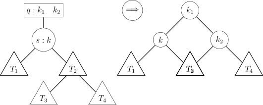
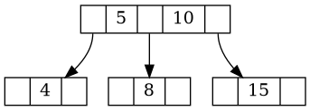

Absorção Árvore 2-3
Considere a seguinte definição de um nó de uma árvore 2-3:
typedef struct No23 {
int key[2];
struct No23 *child[3];
int nkeys;
int leaf;
} No23;
Na árvore 2–3, diz-se que ocorre uma operação de split quando um nó pai q do tipo nó–3 (isto é, contendo exatamente duas chave) possui um filho que também é um nó–2 s.
A operação de split quebrar o nó pai em três nós do tipo nó-2, respeitando a ordenação das chaves e a estrutura da árvore.

Caso o nó pai possua dois filhos, ambos do tipo nó–2, a absorção deve ser realizada com o filho cuja subárvore possui maior altura. Se ambos os filhos possuírem a mesma altura, nenhuma absorção deve ser realizada, mantendo-se o nó pai inalterado.
Imagine o seguinte nó pai:

Após a absorção, o nó fica da seguinte maneira:
